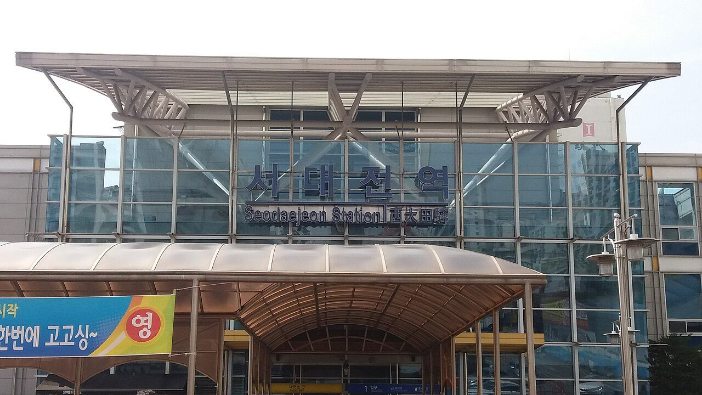
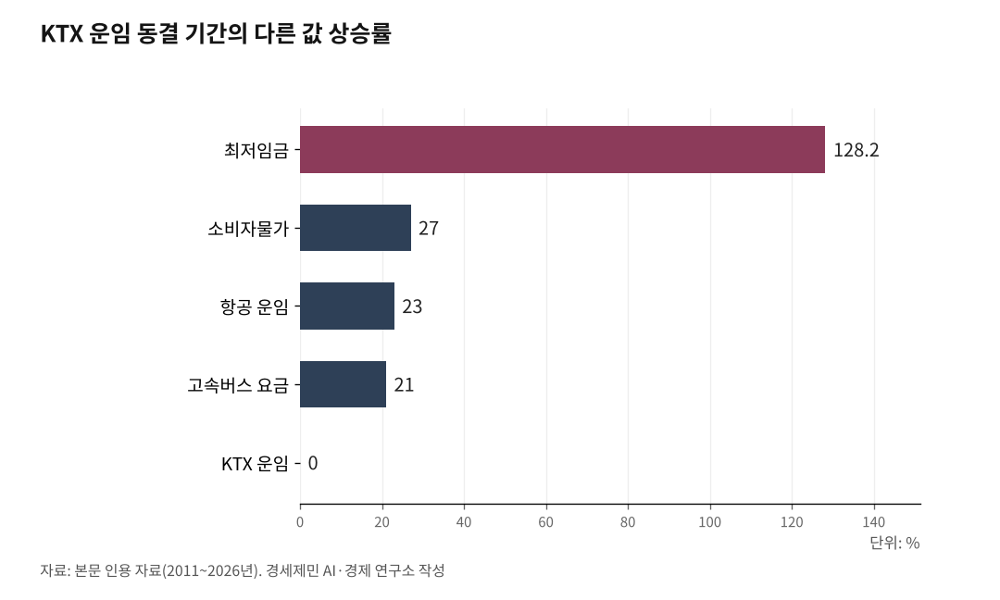

코레일 사장이 15년만에 KTX 요금 현실화 꺼낸 이유
누적 적자 22조, 노후 차량 5조 교체. 재정의 무게
독일 ICE와 IC, 프랑스 TGV와 Intercités. 속도별 다층 요금이 철도를 살렸다
자연독점 공공재인 철도, 자체 재원과 정부 인프라 지원 함께 가야
코레일 사장의 작심 발언, 그리고 철도의 본질
AI경세제민=김갑봉 기자 | 김태승 한국철도공사(코레일) 사장이 5월 14일 광주 광산구 호남철도차량정비단 인근에서 출입기자단 간담회를 갖고 KTX 요금 인상 논의가 필요하다고 말했다. 그는 "지난 15년간 요금이 한 번도 오르지 않아 재무적 압박이 크다. 이대로 가면 열차는 달리지만 돈을 벌지 못해 위기가 닥칠 수 있다"고 했다. 국민 동의, 정치권과 경제부처의 합의, 혼잡 시간대 탄력 요금제를 전제로 달았다.

철도는 두 얼굴을 가진 산업이다. 막대한 인프라 고정비용과 네트워크 외부성을 가진 자연독점 산업이면서, 동시에 이동권, 지역 균형, 탄소중립, 대륙 연결을 떠받치는 공공재다.
그래서 운임만 시장 원리에 맡길 수도, 모든 비용을 정부 지원으로만 메울 수도 없다. 자체 재원 마련과 정부의 인프라 투자가 동시에 작동해야 굴러간다.

15년 동결, 다른 것은 모두 올랐다
KTX 운임은 2011년 11월 3.3% 인상을 마지막으로 15년째 동결됐다. 서울 부산 일반실 5만9800원이다. 이 가격은 2015년 이후 한 자리도 바뀌지 않았다.
같은 기간 다른 가격은 모두 올랐다. 소비자물가지수가 약 27% 상승했고, 고속버스 요금은 21%, 항공 운임은 23% 올랐다. 최저임금은 4320원에서 9960원으로 128.2% 인상됐고, 코레일이 부담하는 전기요금은 연 4000억원에서 6000억원 수준으로 50%가량 늘었다.
명목 동결은 경제학적으로 실질 인하다. 물가가 27% 오르는 동안 운임이 그대로였다면, 실질 운임은 20% 넘게 떨어진 것과 같다.
누적 적자 22조, 노후 차량 5조. 안전을 갉아먹는 적자
코레일이 공공기관 경영정보 공개시스템(ALIO)에 공시한 2024년 결산은 영업손실 3524억원이다. 전년 736억원에서 적자 폭이 5배 가까이 늘었다. 누적 적자 22조원, 부채비율 265.4%, 하루 이자비용 10억원이다.
이 적자는 단순한 경영 부실이 아니라 구조에서 비롯됐다. 코레일은 광역철도와 화물, 벽지 노선을 모두 떠안는 공익서비스의무(PSO, Public Service Obligation)를 진다. SR은 수익성 높은 수서발 고속선 중심으로 운영해 코레일과 비대칭 구조에 놓여 있다.
적자 누적은 안전 투자 위축으로 이어진다는 지적이 나온다. 화물열차 탈선 사고는 2019년 5건에서 2023년 20건으로 4배 늘었다. 노후 시설 교체와 점검 투자가 줄어든 영향이라는 분석이 있다.
더 큰 시한폭탄은 차량이다. 김 사장은 "2030년대 초반이면 2004년 들여온 KTX 46편성을 다 교체해야 하는데 단순 교체 비용만 5조원 수준"이라고 했다. 코레일은 1차 발주를 2027년, 2차 발주를 2032년에 진행할 계획이다.
독일 ICE와 IC, 프랑스 TGV와 Intercités. 속도별 다층 요금
독일은 1994년 동서독 연방철도를 통합해 도이체반(DB, Deutsche Bahn)을 출범시키면서 연방 정부가 약 340억 유로(약 50조원)의 철도 부채를 인수했다. 부채를 정부가 떠안은 위에서 운임은 속도와 서비스에 따라 다층 구조로 설계됐다.
시속 300km의 ICE(인터시티익스프레스, InterCity Express)는 역간 정액제 프리미엄 요금을 받는다. 1971년 도입된 IC(인터시티, InterCity)는 재래선을 시속 200km로 운행하며 약 300개 역을 연결하는 중간 가격대 서비스다. 인프라 자회사 DB InfraGO(디비 인프라고)는 2025년 약 199억 유로를 인프라에 투자했고, 2026년에는 230억 유로 이상을 투자할 계획이다.
프랑스도 비슷한 경로를 걸었다. 2018년 신철도협약(Pacte ferroviaire)에 따라 정부가 프랑스 국철 SNCF(에스엔세에프) 부채 350억 유로(약 52조원)를 인수했고, SNCF는 부채 인수 이후 4년 연속 흑자를 기록했다. 2024년 순이익은 16억 유로에 이르렀다.
요금 체계는 세 갈래다. 시속 300km의 TGV 인위(TGV inOui)는 고급 프리미엄을, 같은 고속선을 쓰되 외곽역 발착과 서비스를 줄인 위고(Ouigo)는 저가형을, 재래선을 시속 200에서 220km로 달리는 인터시테(Intercités)는 중간 가격을 맡는다.
두 나라가 보여주는 원리는 같다. 부채는 정부가 공적으로 처리하고, 운임은 속도와 서비스별로 다층화해 이용자 선택폭을 넓히며, 인프라는 별도 재원으로 확장하는 3박자다.
준고속철, 재래선 개량, 그리고 대륙철도
한국은 KTX와 일반열차(ITX 새마을, 무궁화호) 사이 속도와 서비스 격차가 크다. 사실상 KTX 단일 트랙에 의존하는 구조여서 좌석난과 가격 부담이 동시에 거론된다.
시속 200km 준고속철도 도입과 재래선 개량이 대안으로 떠오르는 이유다. 곡선 완화, 신호 고도화, 교차 분리가 핵심이다. 급한 사람은 KTX, 덜 급한 사람은 준고속철로 갈리면 수요 분산과 요금 차별화가 동시에 이뤄진다. 독일과 프랑스가 이미 보여준 경로다.
재래선 개량은 대륙철도 연결의 전제 조건이기도 하다. 대륙철도의 핵심은 여객이 아니라 화물이다. 2011년 첫 운행을 시작한 중국 유럽 화물열차(CRE, China Railway Express)는 2024년 11월 누적 운행 12만편, 누적 화물가치 4900억달러를 넘어섰다.
한국 철도화물 수송분담률은 톤 기준 약 1.3%, 톤킬로미터 기준 약 3.8%로 OECD 최하위권이다. 톤킬로미터 기준 독일 19.2%, 프랑스 15.4%, 영국 9.7%, 일본 5.1%와 비교하면 격차가 크다. 한국이 대륙철도에 진입하려면 50량 1km급 장대화물열차 운행을 위한 대피선 확보, 표준궤(1435mm) 호환 구간 정비, 항만 인입선 확충이 함께 가야 한다.
9월 KTX와 SRT 통합과 운임 논의가 맞물린 시점이다. 통합 시 운임 10% 할인이 약속돼 있어 단기적으로는 인하 효과가 나타나지만, 중장기 재무 압박은 그대로 남는다. 자체 재원 마련을 위한 운임 현실화와 인프라에 대한 정부 지원을 어떻게 함께 설계할지가 과제로 남았다.
※ 이 기사는 AI 프로그램 클로드를 활용해 작성했습니다.
참고문헌
· "코레일 사장 'KTX 요금 15년간 한 번도 안 올라 재무 압박... 빠른 시일 내 올려야'", 경향신문, 2026.5.17., https://www.khan.co.kr/article/202605171527001
· "코레일 사장 '15년째 요금 동결에 재무 압박 커, 인상 논의 불가피'(종합)", 뉴시스, 2026.5.17., https://www.newsis.com/view/NISX20260517_0003632904
· "KTX SRT 통합 앞둔 코레일, 적자 22조... 김태승 사장 '15년째 묶인 KTX 요금... 논의 필요'", 더퍼블릭, 2026.5.17., https://www.thepublic.kr/news/articleView.html?idxno=304796
· "사업비 5조, '16칸 EMU-320' 도입... 내년 첫 발주 [노후 KTX-1 교체]", 철도경제신문, 2026.4.7., https://www.redaily.co.kr/news/articleView.html?idxno=16135
· 한국철도공사, "2024년 요약 손익계산서 및 요약 포괄손익계산서", 공공기관 경영정보 공개시스템(ALIO) 공시, 2025.10.14., https://www.alio.go.kr
· "탄소중립시대 철도물류 현황과 전망", 물류신문, 2024.11.5., https://www.klnews.co.kr/news/articleView.html?idxno=314443
· "[제5차 국가철도망⑥] 기후위기 시대 철도에서 사라진 화물", 인천투데이, 2025.7.21., https://www.incheontoday.com/news/articleView.html?idxno=305604
· "SNCF Group achieves fourth year of profitability", RailTech, 2025.3.5., https://www.railtech.com/all/2025/03/05/sncf-group-achieves-fourth-year-of-profitability/
· "PR SNCF Group 2024 Full Year Results", SNCF Group, 2025.3., https://www.groupe-sncf.com
· "Loi du 27 juin 2018 pour un nouveau pacte ferroviaire", Légifrance, https://www.legifrance.gouv.fr
· "DB to invest record 23bn euros in German rail network in 2026", RailTech, 2025.12.30., https://www.railtech.com/all/2025/12/30/db-to-invest-record-e23bn-in-german-rail-network-in-2026/
· "DB InfraGO Reports Stabilisation of German Rail Network in 2025", Railway News, 2026.5., https://railway-news.com/db-infrago-reports-stabilisation-of-german-rail-network-in-2025/
· "Intercity (IC) Long-distance trains", Deutsche Bahn, https://int.bahn.de/en/trains/long-distance-trains
· "China Europe Railway Express 누적 12만편 돌파", 중국 국가발전개혁위원회, 2025.
사진 출처
· [대표사진] Aspere, "Seodaejeon Station entrance.jpg", 위키미디어 공용, CC0, https://commons.wikimedia.org/wiki/File:Seodaejeon_Station_entrance.jpg
※ 이 기사는 인공지능을 활용해 작성했습니다.
관련기사
- 고속철도 매진인데 심야 운행 멈추는 이유, 새벽 5~6시간 정비 공백
- 강호축 준고속철도, 2031년 강릉-목포 4시간으로 연결
- [환황해 철도망⑧] 열차페리 1~3년, 해저터널 10년 뒤... 첫 단추는 인천신항 인입선
- [환황해 철도망⑦] 제재 밖 북한 텅스텐, 3월 3257만달러에서 8월 28만달러로
저작권자 © AI경세제민 무단전재 및 재배포, AI학습 및 활용 금지